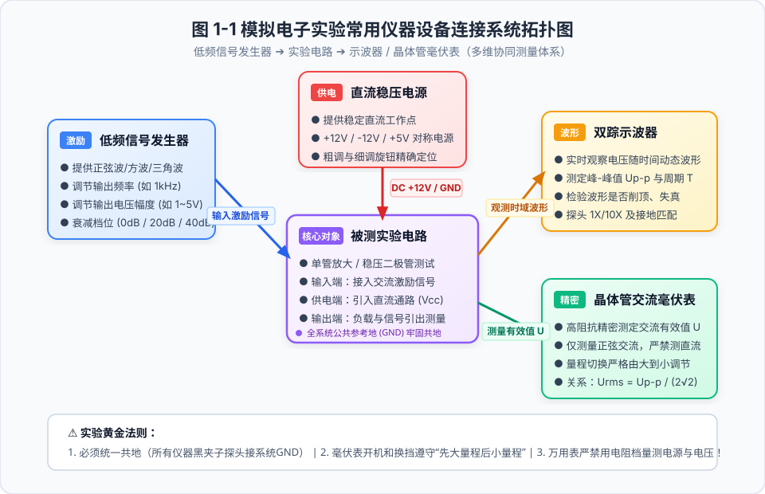
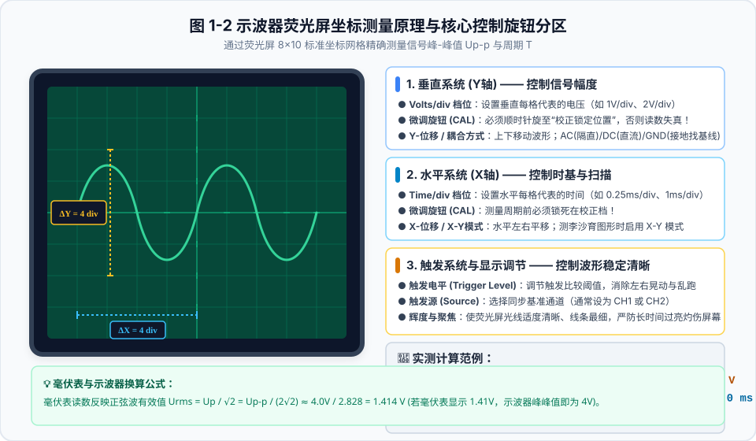
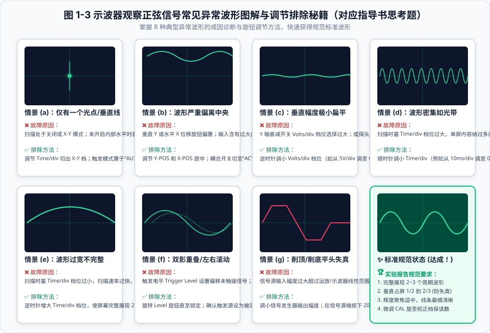
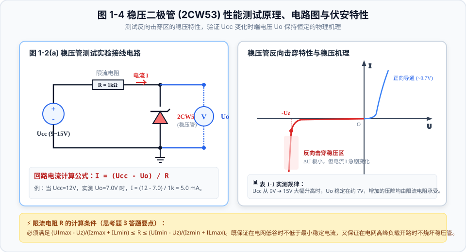
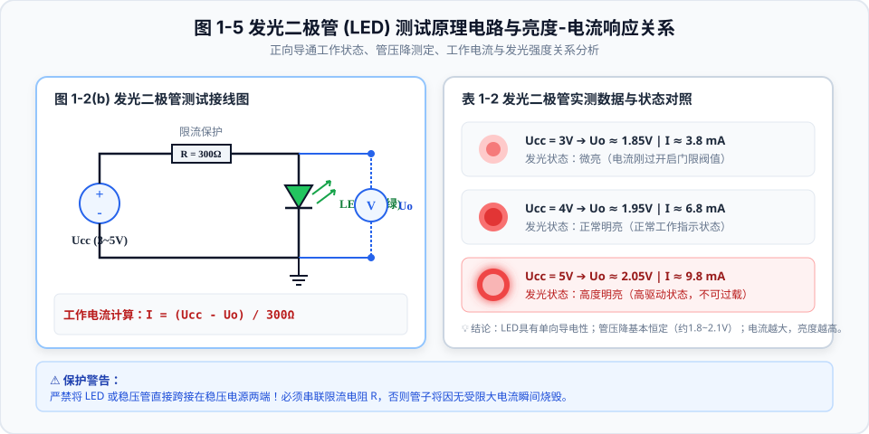
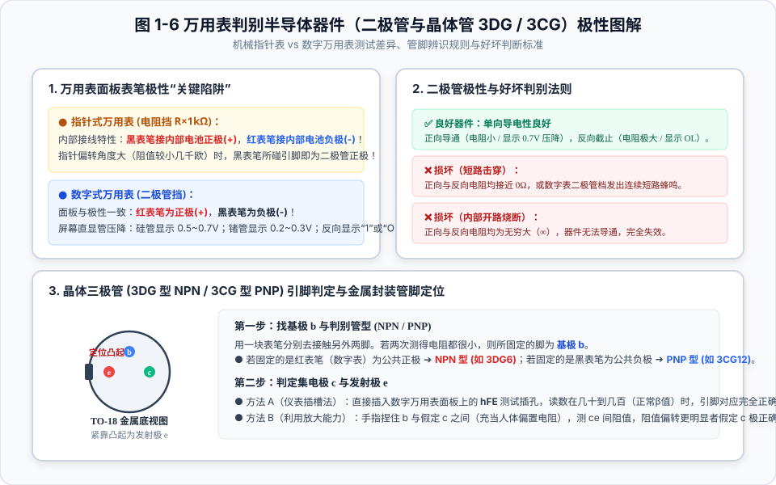

🧭 实验一定位与目的
作为整个模电实验的第一关与基石，本次实验的核心不仅是获得表格数据，更在于规范实验操作习惯，牢固掌握基本测量仪器的协同运作与保护规范。
🎯 核心训练指标
- 掌握双踪示波器、低频信号发生器、晶体管交流毫伏表、直流稳压电源、万用表面板旋钮的作用。
- 理解正弦波有效值 $U_{rms}$ 与示波器峰-峰值 $U_{p-p}$ 的物理本质与对应换算公式。
- 掌握万用表电阻挡与二极管挡判别二极管、稳压管、LED极性及三极管（3DG/3CG）引脚的方法。

图 1-1 模拟电子实验常用仪器设备连接系统拓扑图（点击右键可放大）
⚠️ 实验三大不可触碰红线（防炸机防烧表）
- 必须全系统共地：所有仪器（信号源、示波器、电路板）的接地黑色鳄鱼夹必须全部牢固连接到实验箱的公共地端（GND），防止产生地线环流引入工频干扰。
- 交流毫伏表使用规则：毫伏表专测正弦交流电，严禁接入直流电压！开机及接线时量程必须置于最高档位，测量时由大量程向小量程逐级换档。
- 万用表禁止带电测电阻：绝对不能在电阻档（$\Omega$）下直接测量电源或通电节点电压，否则瞬间烧毁表头保险管。
📊 示波器坐标测量原理与换算
示波器荧光屏拥有标准 $8 \times 10$ 厘米网格，通过读取波形在垂直与水平方向所占的格数（Div），即可结合旋钮档位精确换算电压幅度与时间周期。

图 1-2 示波器荧光屏坐标测量原理与核心控制旋钮分区
🧮 示波器实时测量与读数在线换算器
⚡ 峰-峰值 Up-p: 4.00 V | 有效值 Urms (毫伏表读数): 1.41 V
⏱️ 周期 T: 1.00 ms | 频率 f: 1000.00 Hz (1.00 kHz)
⚡ 8 种异常波形排查指南（对应教材图 1-3）
在调试过程中，若示波器波形不正常，请对照下方图解与常见症状，快速定位旋钮问题：

图 1-3 示波器观察正弦信号常见异常波形图解与调节排除秘籍
原因诊断： 扫描时基被关闭，或示波器误打在 X-Y 工作模式（此时水平偏转板由外接信号控制，无锯齿波扫描发生器介入）。
排除手段： 将水平扫描模式从 X-Y 切出，将触发方式选择为“AUTO”（自动触发），顺时针旋转扫描时基 Time/div 至适当档位。
原因诊断： 垂直位移（Y-POS）或水平位移（X-POS）旋钮调偏；或者输入耦合为 DC 档，输入信号中含有过大直流偏移分量。
排除手段： 调节面板垂直与水平位移旋钮将波形居中；若仅测交流信号，将输入耦合开关拨至“AC”（阻隔直流电平）。
原因诊断： Y 轴衰减开关 Volts/div 档位过大，或者探头打在 10X 衰减位置而示波器未设置补偿。
排除手段： 逆时针调小 Volts/div（例如从 5V/div 调节至 0.5V/div），使波形高度占据荧光屏上下约 1/2 至 2/3 的有效网格。
原因诊断： 触发系统未同步。触发源选择错误（如接在 CH1 却触发 CH2），或者触发电平（Trigger Level）旋钮设得太高/太低，超出了信号峰值范围。
排除手段： 确认触发源（SOURCE）选择与输入通道一致；慢速旋转“触发电平（Level）”旋钮，直至波形完全“定格”在屏幕上。
🔍 半导体元器件实测与物理规律
1. 稳压二极管 (2CW53) 性能测试
稳压管工作在反向击穿状态。在击穿区内，尽管流过稳压管的电流大幅变化，但其两端端电压 $U_o$ 几乎保持恒定（等于标称稳压值 $U_Z$）。

图 1-4 稳压二极管 (2CW53) 性能测试原理、电路图与伏安特性
⚡ 稳压管回路电流快速计算器
回路电流 I = (12.0 - 7.0) / 1000 = 5.00 mA | 限流电阻分压 UR = 5.00 V
2. 发光二极管 (LED) 性能测试
发光二极管工作在正向导通状态。其正向导通压降相对恒定（约 $1.8\sim 2.1\text{V}$），其发光强度与流过的正向电流 $I$ 呈直接正相关。

图 1-5 发光二极管 (LED) 测试原理电路与亮度-电流响应关系
3. 万用表判别半导体器件极性

图 1-6 万用表判别半导体器件（二极管与晶体管 3DG / 3CG）极性图解